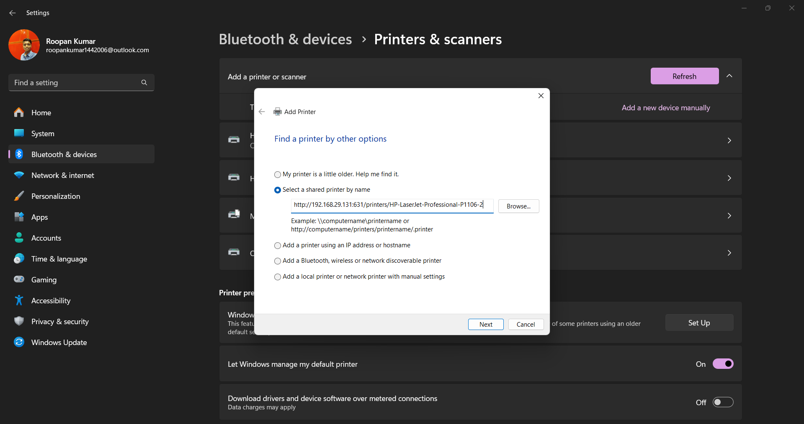
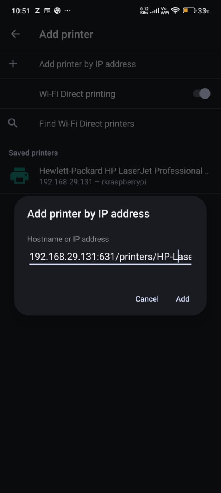

🖨️ Raspberry Pi Wireless Print Server Setup
This guide helps you turn a Raspberry Pi and USB printer (like HP LaserJet P1106) into a wireless print server for Windows and Android.
📦 Requirements
- Raspberry Pi 4 with Raspberry Pi OS
- USB Printer (e.g., HP LaserJet P1106)
- Wi-Fi network
⚙️ Step-by-Step Setup
sudo apt update && sudo apt upgrade -ysudo apt install cups -ysudo usermod -aG lpadmin rk- Edit the CUPS config file:
sudo nano /etc/cups/cupsd.conf
- Make the following changes:
- Add
Allow @local under these sections:
<Location /><Location /admin><Location /admin/conf><Location /admin/log>
- Restart the CUPS service:
sudo systemctl restart cups
sudo apt install hplip hplip-gui -ysudo hp-setup -i → Select USB and follow the prompts- Open
http://<Pi-IP>:631 in a browser
- Add printer and select correct driver (HP LaserJet Professional P1106)
- Set that printer as the default
- Delete duplicate or non-working printers (if any)
🖥️ Wireless Printing from Windows
- Go to Control Panel → Devices and Printers → Add Printer
- Click “The printer that I want isn't listed”
- Choose “Select a shared printer by name”
- Enter:
http://<Pi-IP>:631/printers/HP-LaserJet-Professional-P1106
- Select appropriate driver or use Windows Update to find HP P1106
📱 Wireless Printing from Android
- Install Mopria Print Service from Play Store
- Go to Settings → Printing → Enable Mopria
- Tap “Add printer” manually
- Enter IPP URI:
ipp://<Pi-IP>:631/printers/HP-LaserJet-Professional-P1106
- Save and print
🖼️ Setup Screenshots
💻 Laptop Setup

📱 Mobile Setup

💡 After Reboot
No extra steps needed — all configurations persist. Your Pi will auto-start everything and the printer will remain shared wirelessly on the network.
Created by Roopan Kumar N | Project Repository: GitHub